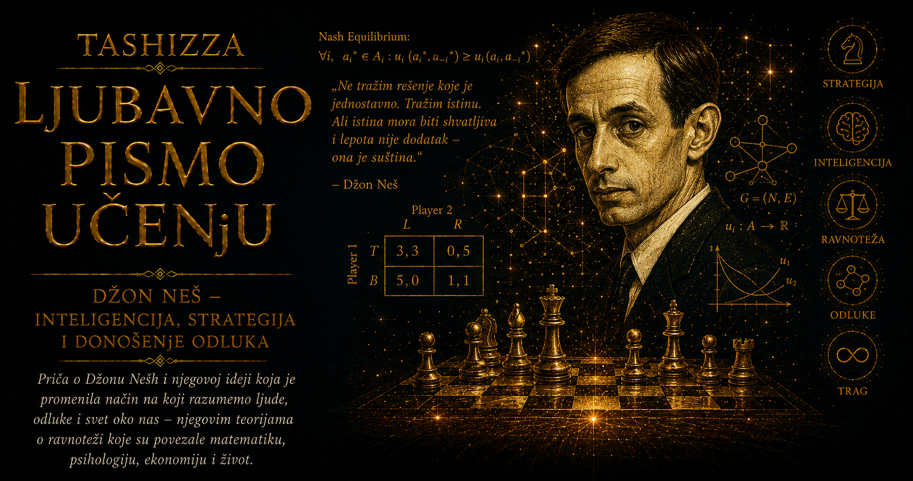

Ljubavno pismo učenju

Teorija igara ušla je u digitalni svet mnogo pre nego što su korisnici počeli da primećuju njeno prisustvo. Svaki put kada platforma određuje pravila aukcije, mreža deli ograničene resurse, algoritam reaguje na druge algoritme ili sistem pokušava da spreči zloupotrebu, pojavljuje se isti problem: rezultat ne zavisi od jednog učesnika, već od njihovih uzajamnih odluka.
Digitalni sistem nije samo skup programa koji izvršavaju unapred zadate naredbe. U njemu deluju korisnici, kompanije, oglašivači, prodavci, kupci, administratori, napadači i algoritmi. Svako ima sopstvene ciljeve i prilagođava ponašanje pravilima koja je neko drugi postavio. Čim učesnik može da bira, da predviđa tuđe reakcije i da promenom svog postupka utiče na ishod, tehnički problem postaje i strateški.
Džon Neš nije projektovao internet, digitalne platforme niti savremene sisteme veštačke inteligencije. Njegov doprinos bio je dublji i posredniji. Nešova ravnoteža dala je matematički jezik za opisivanje stanja u kojem nijedan učesnik ne može da poboljša svoj položaj jednostranom promenom strategije, dok svi ostali zadržavaju svoje ponašanje. Taj pojam omogućio je inženjerima, ekonomistima i informatičarima da digitalne sisteme proučavaju kao prostore uzajamnih podsticaja.
U klasičnom programu korisnik izdaje naredbu, a mašina je izvršava. U mreži sa mnogo samostalnih učesnika takva slika više nije dovoljna. Korisnik može prikriti nameru, platforma može promeniti pravila, konkurent može odgovoriti novom ponudom, a algoritam može naučiti da koristi slabost drugog algoritma. Sistem se menja upravo zato što njegovi učesnici posmatraju jedni druge.
Internet je od početka zahtevao saradnju računara koji pripadaju različitim ljudima i ustanovama. Ruteri prosleđuju pakete, serveri odgovaraju na zahteve, mreže razmenjuju informacije o putevima kojima podaci mogu da putuju. Zajednički protokoli omogućavaju da uređaji različitih proizvođača deluju kao delovi iste celine. Ipak, nijedan tehnički standard ne može unapred garantovati da će svaki učesnik postupati u interesu čitave mreže.
Vlasnik mreže može pokušati da smanji sopstvene troškove prebacujući saobraćaj drugima. Korisnik može prisvojiti više zajedničkog kapaciteta nego što mu pripada. Napadač može slati lažne signale, a kompanija može zatvoriti sistem kako bi korisnike učinila zavisnim od svojih proizvoda. Zbog toga projektovanje mreža podrazumeva razmišljanje o tome kako će racionalni ili zlonamerni učesnici reagovati na ponuđena pravila.
Jedna od oblasti u kojoj je veza sa teorijom igara postala naročito vidljiva jesu aukcije. Digitalno oglašavanje zahteva da se za deliće sekunde odluči koji će oglas biti prikazan određenom korisniku. Oglašivači nude cene, platforma primenjuje pravila aukcije, a svaki ponuđač pokušava da proceni vrednost prikaza i ponašanje konkurenata. Mala promena pravila može promeniti strategije hiljada učesnika i raspodelu ogromnih količina novca.
Dobra aukcija zato ne treba samo da pronađe najvišu ponuđenu cenu. Ona mora da razmotri podsticaje koje stvara. Ako učesnici imaju korist od skrivanja stvarne procene, lažnog licitiranja ili manipulacije konkurencijom, sistem će ih podsticati da razvijaju upravo takve strategije. Projektovanje mehanizama koristi uvide teorije igara kako bi pravila uskladilo sa željenim ishodom.
Sličan pristup koristi se pri raspodeli radio-frekvencija, električne energije, računarskog vremena i drugih ograničenih resursa. Svaki učesnik poseduje informacije koje projektant sistema nema: koliko mu resurs vredi, koliko mu je hitno potreban i koje alternative može da koristi. Pravila moraju biti oblikovana tako da učesniku bude isplativo da otkrije dovoljno istinitih informacija, umesto da sistem pobedi manipulacijom.
Digitalne platforme predstavljaju naročito složene strateške prostore. Njihova vrednost često raste sa brojem korisnika. Ljudi odlaze tamo gde se već nalaze njihovi prijatelji, kupci biraju tržište sa mnogo prodavaca, a programeri razvijaju aplikacije za operativne sisteme sa velikim brojem korisnika. Tako nastaju mrežni efekti: izbor svakog pojedinca zavisi od izbora mnoštva drugih.
Mrežni efekti mogu učiniti jedan standard ili platformu stabilnom čak i kada postoje tehnički kvalitetnije alternative. Korisnik nema dovoljno razloga da sam pređe u praznu mrežu. Programer ne želi da razvija proizvod za sistem bez korisnika, dok korisnici ne žele sistem bez programa. Nešovska perspektiva objašnjava zašto digitalni svet može ostati zaključan u postojećem rešenju i zašto individualni izbor nije uvek dovoljan da promeni zajednički poredak.
Reputacioni sistemi pokušavaju da omoguće saradnju među ljudima koji se ne poznaju. Kupac bira prodavca na osnovu ocena prethodnih kupaca, vozač prihvata putnika čije je ponašanje ranije ocenjeno, a platforma kažnjava naloge koji krše pravila. Reputacija povezuje sadašnji potez sa budućim mogućnostima. Kratkoročna korist od prevare postaje manje privlačna kada može izazvati gubitak pristupa čitavom sistemu.
Ipak, svaki reputacioni mehanizam stvara nove strategije. Učesnici mogu kupovati lažne ocene, organizovati uzajamno hvaljenje, kažnjavati opravdane kritike ili otvarati nove naloge da bi pobegli od loše istorije. Tehnički dodatak koji treba da stvori poverenje postaje nova igra. Njegov dizajner mora predvideti kako će ljudi reagovati na samo merilo reputacije.
Algoritmi za preporučivanje pružaju još jedan primer. Platforma želi da korisnik ostane aktivan, proizvođač sadržaja želi pažnju, oglašivač želi reakciju, a korisnik želi sadržaj koji smatra vrednim. Kada se vreme provedeno na platformi pretvori u glavno merilo uspeha, svi učesnici počinju da se prilagođavaju tom cilju. Naslovi postaju izazovniji, sadržaj emocionalniji, a algoritam sve uspešniji u zadržavanju pažnje, čak i kada zajednički rezultat postaje siromašnije informaciono okruženje.
Takav ishod može biti stabilan. Nijedan proizvođač sadržaja ne želi prvi da odustane od postupaka koje algoritam nagrađuje. Platforma strahuje da će smanjenje angažovanja preusmeriti korisnike konkurenciji. Korisnik pojedinačno nema snagu da promeni čitav sistem. Nešova ravnoteža ovde ne služi kao pohvala efikasnosti, već kao upozorenje da stabilan digitalni poredak može istovremeno biti nepovoljan za gotovo sve koji u njemu učestvuju.
Razvoj veštačke inteligencije dodatno je približio teoriju igara samom središtu računarstva. U učenju sa više agenata svaki sistem deluje u okruženju koje sadrži druge sisteme sposobne da uče. Kada jedan agent promeni strategiju, iskustvo iz kojeg uče svi ostali takođe se menja. Okruženje nije nepromenljivo, pa uspešno ponašanje iz jednog trenutka može postati neuspešno čim ga drugi prepoznaju i prilagode mu se.
Autonomna vozila moraju da predviđaju ponašanje pešaka, ljudskih vozača i drugih autonomnih vozila. Programi za trgovanje reaguju na odluke drugih programa brzinom nedostupnom čoveku. Sistemi za odbranu računarskih mreža menjaju ponašanje prema napadima, dok napadači ispituju njihove odgovore. U svakom od tih slučajeva inteligencija uključuje sposobnost strateškog razumevanja drugih agenata.
Igre su postale i važne laboratorije veštačke inteligencije. Programi za šah, go i poker moraju procenjivati buduće poteze protivnika. Poker je posebno značajan jer uključuje skrivene informacije, blefiranje i procenu verovatnoće. Uspešan sistem ne traži samo najbolji potez u poznatom stanju, već održava strategiju koju protivnik ne može lako da iskoristi.
Nešova ravnoteža pruža jedno merilo takve otpornosti, ali pronalaženje ravnoteže u velikim igrama može biti izuzetno zahtevno. Digitalni sistemi često imaju ogroman broj mogućih stanja, nepotpune informacije i učesnike čiji se ciljevi menjaju. Postojanje matematičke ravnoteže ne garantuje da je algoritam može brzo izračunati niti da će se stvarni sistem prema njoj kretati.
Računarska teorija igara zato proučava i samu složenost strateškog zaključivanja. Koliko je vremena potrebno da se pronađe ravnoteža? Koje približno rešenje je dovoljno dobro? Kako učesnici uče bez potpunog poznavanja igre? Mogu li pravila sprečiti da inteligentni agenti zajednički proizvedu nestabilan ili štetan rezultat? Ta pitanja povezuju matematiku, ekonomiju i računarstvo na način koji u vreme Nešovih prvih radova nije bilo moguće predvideti.
Bezbednost digitalnih sistema predstavlja stalno strateško nadmetanje. Branilac mora odlučiti koje slabosti da ukloni, koje aktivnosti da prati i koliko resursa da uloži u zaštitu. Napadač bira cilj, trenutak i način napada prema zaštiti koju očekuje. Svaka uspešna odbrana menja buduće postupke napadača, dok svaka nova pretnja menja prioritete branilaca. Rešenje nije konačna pobeda jedne strane, već neprekidno prilagođavanje.
Teorija igara pomaže i u razumevanju privatnosti. Korisnik odlučuje koliko podataka da podeli, platforma određuje kakvu će uslugu ponuditi zauzvrat, oglašivači procenjuju vrednost informacija, a regulator postavlja granice dopuštenog ponašanja. Ako je odustajanje od praćenja komplikovano ili skupo, formalna mogućnost izbora ne mora predstavljati stvarnu pregovaračku moć korisnika.
Najvažnija posledica Nešovog nasleđa za digitalni svet jeste promena načina projektovanja. Nije dovoljno napraviti sistem koji ispravno radi kada ga svi koriste prema prvobitnoj zamisli. Potrebno je pitati kako će učesnici reagovati na njegova pravila, koje će prečice pronaći, šta će pokušati da manipulišu i kakva će ravnoteža nastati iz njihovih odgovora.
Digitalna infrastruktura zato je istovremeno tehnička i društvena arhitektura. Kod određuje šta je moguće, ali podsticaji utiču na ono što će ljudi i algoritmi zaista učiniti. Najbrži program, najprecizniji model i najelegantniji protokol mogu proizvesti loš sistem ako nagrađuju ponašanje koje razara njegovu zajedničku svrhu.
Džon Neš je matematici dao pojam kojim može da prepozna stabilnost u svetu uzajamnih odluka. Digitalna civilizacija pokazala je koliko je taj pojam potreban. Milijarde ljudi i mašina danas učestvuju u igrama čija pravila najčešće ne vide, mada njihove posledice osećaju svakodnevno. Razumevanje tih pravila postalo je deo digitalne pismenosti: ko projektuje igru, šta ona nagrađuje, kome pripada korist i može li stabilna ravnoteža biti promenjena u pravedniji poredak.